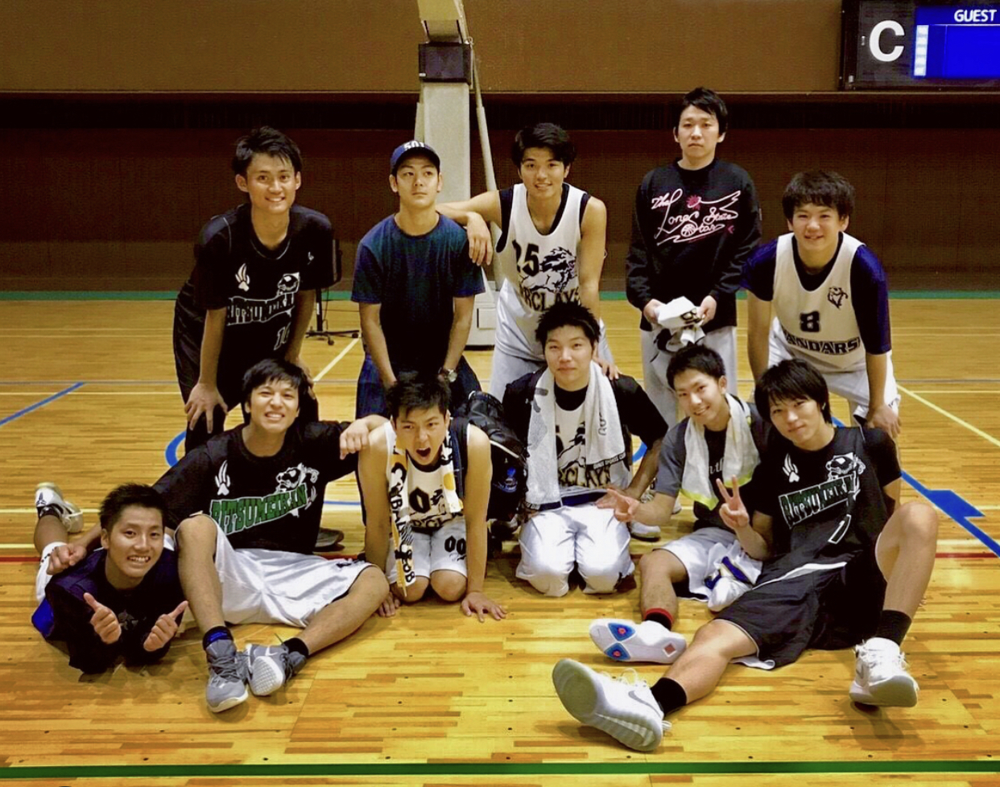

プロフィール
- 名前
- 脇田伊織
- 生年月日
- 1995/10/11
- 出身地
- 兵庫県
- 特技
- バスケットボール
- 服づくり…
- リメイク…
- 興味
- コーヒー
- 甘味
- 服飾
- 読書
- アニメ
- 音楽
- etc...


経歴
中学生
- 年代
- 2008年4月 (H.20)：入学
- 2011年3月 (H.23)：卒業
- 年齢
- 12~15歳
- 学校
- 神戸市立井吹台中学校
- 特筆
- バスケットボールで
全国大会出場！
頑張ったこと
バスケットボール
実績
- 2008年
- 神戸市総合体育大会２位
- 兵庫県総合体育大会２位
- 近畿総合体育大会出場
- 2010年
- 神戸市総合体育大会２位
- 兵庫県総合体育大会1位
- 近畿総合体育大会２位
- 全国総合体育大会出場
高校生
- 年代
- 2011年4月 (H.23)：入学
- 2014年3月 (H.26)：卒業
- 年齢
- 15~18歳
- 学校
- 育英高等学校
- 特筆
- 兵庫県予選・夏冬制覇
頑張ったこと
バスケットボール
実績
- 2011年
- インターハイ兵庫県予選３位
- ウインターカップ兵庫県予選３位
- 2012年
- インターハイ兵庫県予選１位
- ウインターカップ兵庫県予選２位
- 2013年
- インターハイ兵庫県予選優勝
- ウインターカップ兵庫県予選優勝

大学生
- 年代
- 2014年4月 (H.26)：入学
- 2018年3月 (H.30)：卒業
- 年齢
- 18~22歳
- 学校
- 立命館大学
- 特筆
- デザインや物作りに心酔
頑張ったこと
学生団体
バスケットボール
アルバイト
実績
- 2015年
- 学生団体で１年間活動
- 2017年
- アルバイトリーダーとして社長賞受賞
- 期間限定の新商品開発
- 社会人バスケットボール
上位リーグへ昇格

プログラミング学習
-
使用言語
- HTML
- ３ヶ月
- CSS
- ３ヶ月
- JavaScript
- ２ヶ月
- Vue
- ２ヶ月
- Nuxt
- ２ヶ月
-
バージョン管理
- Git
- ２ヶ月
- GitHub
- ２ヶ月
バックエンド
- Firebase
- １ヶ月
目的
「ヒト・モノ・クラシ」を創造する。
最初の動機は、社会に貢献できていない自分の価値を疑ったことでした。モノづくりが好きだったこともあり、プロダクトを生み出すことで社会に貢献できる手段としてプログラミングを選択しました。
現在はプログラミングでの社会貢献を通して、暮らしとテクノロジーの繋がりを学び、
人々の『クラシ』を創造し、社会に貢献していきたいと考えています。
短期目標
フロントエンジニアとして、1人分以上の戦力となることが短期目標です。まずは現場での経験を積み、技術者のスピード感、知識を体系的に身につけていきたいと考えています。そして将来的には価値を創造したり、チームをマネジメントしていくような人材になることが長期目標です。
制作物
MONO QUE
サイトリンク
-
- 意図
- 「モノと対話する」
身近にあるモノ。愛着のあるモノ。
よく使うモノ。久々に使うモノ。
モノと向き合った時、実はあまり知らずにいることが多くあると思います。
人と接する様に、モノと接する。
知っていくことで新たな一面を知る。
気の赴くままに、モノと対話する場所を提案したいです。
「モノの過剰廃棄」を減らしたい。
過剰な生産、消費ではなく、一つ一つとの関係を大切にして欲しいです。
-
- 使用言語
- HTML
- CSS
- JavaScript
- Vue.js
- Nuxt.js
- Firebase
-
- 制作期間
- ２週間